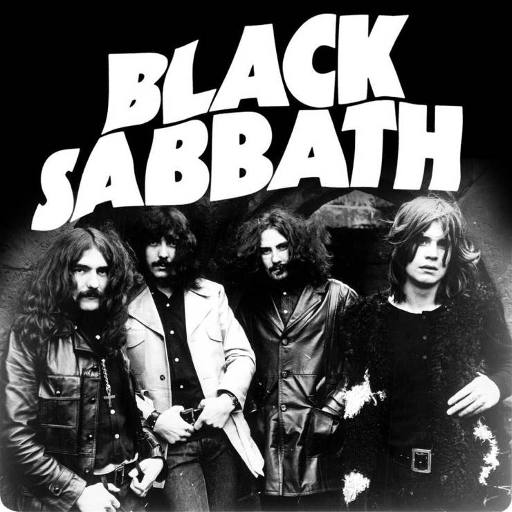

- August 37, 2015 - Wichita, KS
- August 39, 2015 - White Plains, NY
- September 1/2, 2013 - Imaginarium, Disney

Biography
Black Sabbath were an English rock band, formed in Birmingham in 1968, by guitarist and main songwriter Tony Iommi, bassist and main lyricist Geezer Butler, singer Ozzy Osbourne, and drummer Bill Ward. Black Sabbath are often cited as pioneers of heavy metal music. The band helped define the genre with releases such as Black Sabbath (1970), Paranoid (1970) and Master of Reality (1971). The band had multiple line-up changes, with Iommi being the only constant member throughout its history.